전산응용기계제도기능사 (2006-01-22 기출문제)
1과목: 기계재료 및 요소
1. 냉간가공을 한 황동의 파이프, 봉재 및 제품들은 저장 중에 균열이 생기는 경우가 있는데 이것을 무엇이라 하는가?
- 자연균열
- 저장균열
- 냉간균열
- 열간균열
(정답률: 42%)

2. 응력-변형율 선도에서 후크의 법칙이 적용되는 구간은?
- 비례한도
- 항복점
- 인장강도
- 파단점
(정답률: 44%)
3. 다음 그림과 같은 스프링 연결에서 스프링 상수값이 k2 = 2k1, k3 = k1 일 때 상당 스프링 상수 k값은?
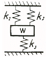
- 4k1
- 3k1
- 1/4k1
- 1/k1 + 1/k2 + 1/k3
(정답률: 33%)
4. 하중이 작용하는 방법에 의한 분류가 아닌 것은?
- 압축 하중
- 인장 하중
- 충격 하중
- 전단 하중
(정답률: 57%)
5. 보의 종류 중 3점 이상의 받침점을 가지는 것으로 다중지지보라고도 하는 보(beam)는?
- 외팔보
- 단순 지지보
- 연속보
- 내닫이보
(정답률: 68%)
6. 공업용으로 많이 사용되는 황동(brass)은 다음 중 어느 것들의 합금인가?
- Cu + Zn
- Cu + Sn
- Cu + Al
- Cu + Mg
(정답률: 78%)
7. 기계부품이나 자동차부품 등에 내마모성, 인성, 기계적 성질을 개선하기 위한 표면경화법은?
- 침탄법
- 항온풀림
- 저온풀림
- 고온뜨임
(정답률: 53%)
8. 모듈이 2이고, 피치원의 지름이 60㎜인 스퍼기어에 맞물려 돌아가고 있는 피니언의 피치원의 지름이 38㎜이다. 피니언의 잇수는?
- 18
- 19
- 36
- 38
(정답률: 69%)
9. 와셔를 기계용과 너트 풀림방지용으로 분류할 때, 기계용으로 사용되는 것은?
- 혀붙이 와셔
- 클로오 와셔
- 둥근 평 와셔
- 스프링 와셔
(정답률: 33%)
10. 냉간가공에서 가공할 수록 재료가 단단해지는 현상을 무엇이라고 하는가?
- 시효경화
- 표면경화
- 냉간경화
- 가공경화
(정답률: 40%)
2과목: 기계가공법 및 안전관리
11. 플라스틱 재료로서 동일 중량으로 기계적 강도가 강철보다 강력한 재질은?
- 글라스 섬유
- 폴리카보네이트
- 나일론
- FRP
(정답률: 60%)
12. 롤링 베어링에서 전동체가 접촉되지 않고 일정한 간격을 유지할 수 있게 하는 것은?
- 내륜
- 저널(journal)
- 외륜
- 리테이너(retainer)
(정답률: 54%)
13. 레이디얼 엔드 저어널 베어링 압력에 관한 설명으로 옳은 것은?
- 하중을 투상 면적으로 나눈 평면 압력
- 응력을 투상 면적으로 나눈 평면 압력
- 투상면적을 하중으로 나눈 평면 압력
- 투상면적을 응력으로 나눈 평면 압력
(정답률: 32%)
14. 볼베어링에서 볼을 적당한 간격으로 유지시켜 주는 베어링 부품은?
- 리테이너
- 레이스
- 하우징
- 부시
(정답률: 59%)
15. 면 접촉에 의한 짝으로서 운동 방식으로는 상대적으로 왕복 직선 운동을 하는 짝으로 실린더와 피스톤처럼 운동하는 짝의 종류는?
- 회전짝
- 미끄럼짝
- 나사짝
- 구면짝
(정답률: 55%)
16. 다음 중 선반의 주요 부품 명칭이 아닌 것은?
- 심압대
- 베드
- 왕복대
- 램
(정답률: 76%)
17. 밀링 머신에 의해 작업할 수 없는 것은?
- 원형축 가공
- 평면 가공
- 홈 가공
- 기어 가공
(정답률: 42%)
18. 드릴링 머신에서는 할 수 없는 작업인 것은?
- 탭작업
- 리밍작업
- 보링작업
- 펀칭작업
(정답률: 54%)
19. 연삭기에서 숫돌의 원주 속도가 V = 1500 m/min, 연삭력은 P = 20 kgf이다. 이 때 소요동력이 7.5kW 이라면 연삭기의 효율은 얼마인가?
- 약 46%
- 약 50%
- 약 65%
- 약 75%
(정답률: 36%)
20. 일감 표면에 약한 압력으로 숫돌을 눌러대고 일감에 회전 운동과 이송을 주며 숫돌을 다듬질할 면에 따라 매우 작고 빠른 진동을 주는 가공법은?
- 래핑(lapping)
- 수퍼피니싱(super finishing)
- 호닝(honing)
- 액체호닝(liquid honing)
(정답률: 70%)
21. 절삭유제에 관한 설명으로 옳지 않은 것은?
- 수용성 절삭유제는 원액에 물을 타서 사용한다.
- 라드유 등의 동물성기름과 대두유 등의 식물성기름은 저속 경 절삭에 적합하다.
- 극압유는 윤활작용이 주목적이다.
- 광물성유 또는 혼합유의 극압첨가제로는 주석(Sn), 아연(Zn)등이 쓰인다.
(정답률: 36%)
22. 작업 중 정전이 되었을 때 취해야 할 사항 중 적당하지 않은 것은?
- 절삭 공구를 가공물에서 떼어낸다.
- 기계의 스위치를 끈다.
- 그대로 전기가 올 때까지 기다린다.
- 필요에 따라 메인 스위치도 끈다.
(정답률: 71%)
23. 다음 중 유동형 칩(chip)이 생겨나는 작업은?
- 판금
- 선삭
- 용접
- 주조
(정답률: 69%)
24. 선반작업에서 사용하는 센터가 아닌 것은?
- 하프 센터
- 게이지 센터
- 파이프 센터
- 베어링 센터
(정답률: 28%)
25. 분할변환기어, 이송변환기어, 차동변환기어를 구비하고 있는 공작기계는?
- 만능드릴머신
- 슬로터
- 호빙머신
- 만능연삭기
(정답률: 25%)
3과목: 기계제도
26. 표준 스퍼기어에서 모듈이 2이고, 잇수가 50일 때 이끝원 지름은 얼마인가?
- 96㎜
- 100㎜
- 102㎜
- 104㎜
(정답률: 52%)
27. 다음 중 대칭도 공차를 나타내는 기호는?
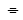
- ◎
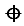
- //
(정답률: 74%)
28. 가는 일점 쇄선으로 끝부분 및 방향이 변하는 부분을 굵게한 선의 용도에 의한 명칭은?
- 파단선
- 절단선
- 가상선
- 특수 지시선
(정답률: 48%)
29. 파이프에 흐르는 유체의 종류와 기호 연결로 틀린 것은?
- 공기 - A
- 유류 - O
- 가스 - G
- 수증기 - W
(정답률: 75%)
30. 그림과 같이 부품의 일부를 도시한 것으로 충분한 경우에는 그 필요 부분만을 표시 할 수 있는 투상도는?
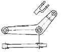
- 회전 투상도
- 부분 투상도
- 국부 투상도
- 요점 투상도
(정답률: 66%)
31. 일반적인 3차원 기하학적 형상 모델링 기법이 아닌 것은?
- 솔리드 모델링
- 서피스 모델링
- 와이어 프레임 모델링
- 디지털 모델링
(정답률: 77%)
32. 좌표원점 (0,0,0)을 기준으로 하여 X, Y, Z축 방향의 거리로 표시되는 좌표는?
- 사용자 좌표
- 절대 좌표
- 상대 좌표
- 원통 좌표
(정답률: 77%)
33. 보기와 같은 배관설비도면에서 글로브 밸브는?
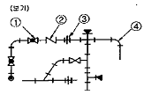
- ①
- ②
- ③
- ④
(정답률: 62%)
34. 스프로킷 휠 제도법에 대한 설명 중 맞는 것은?
- 바깥지름은 굵은실선으로 그린다.
- 피치원은 가는실선으로 그린다.
- 이뿌리원은 굵은 실선으로 그린다.
- 이의 부분을 상세히 그릴 때는 조립도를 추가한다.
(정답률: 59%)
35. 다음 중 나사의 종류를 표시하는 기호로 맞는 것은?
- 미터 보통 나사 : BC
- 미니어처 나사 : SM
- 유니파이 보통 나사 : UNC
- 미터 사다리꼴 나사 : G
(정답률: 79%)
36. 그림에서 표시한 굵은 일점쇄선이 의미하는 뜻은 무엇인가?
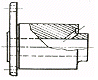
- 전 단면도
- 한쪽 단면도
- 부분 단면도
- 회전 도시 단면도
(정답률: 64%)
37. 다음 중 커서(cursor)의 설명으로 옳은 것은?
- 화면을 나타내는 기본 단위이다.
- CAD의 처리속도를 나타내는 단위이다.
- 화면에서 텍스트와 그래픽 화면을 전환하는 요소이다.
- 화면에서 물체의 특정 위치를 인식하고 조정하는 역할을 한다.
(정답률: 76%)
38. 다음 중 물체를 입체적으로 나타낸 도면이 아닌 것은?
- 투시도
- 등각도
- 캐비닛도
- 정투상도
(정답률: 42%)
39. 다음 축에 대한 제도 설명 중 옳은 것은?
- 축은 옆으로 길게 또는 수직으로 세워 놓은 상태로 도시한다.
- 축은 길이 방향으로 절단하여 전단면도로 표현하지 않는다.
- 단면의 모양이 같은 긴 축은 중간 부분을 파단하여 짧게 표현하고, 전체 길이치수 밑에 밑줄을 긋는다.
- 축의 끝에는 모따기를 하지 않아도 된다.
(정답률: 52%)
40. 치수입에서 (100)으로 표시하였을 때 ( )는 무엇을 뜻하는가?
- 완성 치수
- 지름 치수
- 기준 치수
- 참고 치수
(정답률: 79%)
41. 다음 그림과 같은 투상도는 무슨 투상도인가?
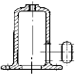
- 부분 확대도
- 국부 투상도
- 부분 투상도
- 회전 투상도
(정답률: 68%)
42. 다음 평벨트 풀리의 도시 방법으로 맞는 것은?
- 암은 길이 방향으로 절단하여 도시한다.
- 벨트 풀리는 축 직각 방향의 투상을 주투상도로 한다.
- 암의 단면 모양은 도형의 안이나 밖에 회전 단면을 하여 도시하지 않는다.
- 암의 테이퍼 부분 치수를 기입할 때 치수 보조선은 경사선으로 그어서는 안 된다.
(정답률: 53%)
43. 부품의 표면에 광명단을 칠한 후, 종이를 대고 눌러서 실제 모양을 뜨는 스케치 방법은?
- 프린트법
- 모양뜨기법
- 프리핸드법
- 청사진법
(정답률: 62%)
44. 치수 기입시 유의사항 설명으로 틀린 것은?
- 관련된 치수는 되도록 한곳에 모아 기입한다.
- 치수는 선에 겹치게 기입해서는 안 된다.
- 중복치수는 피하고 되도록 평면도에 집중하여 기입한다.
- 필용에 따라 기준선, 점, 가공면을 기준으로 기입하여도 무방하다.
(정답률: 59%)
45. 도면의 촬영, 복사 및 도면 접기의 편의를 위한 중심마크의 굵기는 얼마인가?
- 0.1mm
- 0.3mm
- 0.5mm
- 1mm
(정답률: 64%)
46. 컴퓨터 시스템에서 정보를 기억하는 최소단위인 정보단위는 어는 것인가?
- 비트(bit)
- 바이트(byte)
- 워드(word)
- 블록(block)
(정답률: 82%)
47. "M24 - 6H/5g"로 표시된 나사 설명으로 틀린 것은?
- 미터나사
- 호칭 지름은 24㎜
- 암나사 5급
- 수나사 5급
(정답률: 62%)
48. 미터 사다리꼴나사 [Tr 40×7 LH]에서 LH가 뜻하는 것은?
- 피치
- 나사의 등급
- 리드
- 왼나사
(정답률: 65%)
49. 다음 도면에서 전체길이를 표시하고 있는 (A)부의 치수는?
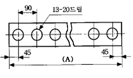
- 1020
- 1080
- 1170
- 1220
(정답률: 61%)
50. 베어링의 호칭번호가 “6202”이면 베어링의 안지름은?
- 5mm
- 10mm
- 12mm
- 15mm
(정답률: 67%)
51. 외접 헬리컬 기어의 주투상도를 단면으로 도시할 때, 잇줄 방향의 표시 방법은?
- 1개의 가는 실선
- 3개의 가는 실선
- 1개의 가는 2점 쇄선
- 3개의 가는 2점 쇄선
(정답률: 41%)
52. 다음 기하공차에 대한 설명으로 틀린 것은?
- ○ - 진원도 공차
- ∠ - 경사도 공차
- ⊥ - 직각도 공차
- ◎ - 흔들림 공차
(정답률: 84%)
53. 슬롯(스플릿) 테이퍼 핀의 호칭방법으로 맞는 것은?
- 명칭, 지름×길이, 재료
- 명칭, 길이×지름, 재료
- 명칭, 종류, 길이×지름
- 명칭, 등급, 지름×길이
(정답률: 43%)
54. 도면의 크기가 얼마만큼 확대 또는 축소되었는지를 확인하기 위해 도면 아래 중심선 바깥쪽에 마련하는 도면의 양식은?
- 표제란
- 부품란
- 중심마크
- 비교눈금
(정답률: 49%)
55. 다음 중 상용하는 구멍기준 끼워맞춤 중 억지 끼워맞춤은?
- H7/f6
- H7/g6
- H7/js6
- H7/t6
(정답률: 60%)
56. 좌우 도는 상하가 대칭인 물체의 ¼을 잘라내고 중심선을 기준으로 외형도와 내부 단면도를 나타내는 단면의 도시 방법은?
- 한쪽 단면도
- 부분 단면도
- 회전 단면도
- 온 단면도
(정답률: 67%)
57. 구멍이
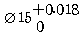
이고, 축이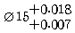
인 중간 끼워맞춤에서 최대죔새와 최대틈새는?- 최대죔새 0.018, 최대틈새 0.011
- 최대죔새 0.011, 최대틈새 0.018
- 최대죔새 0.018, 최대틈새 0.025
- 최대죔새 0.00, 최대틈새 0.007
(정답률: 65%)
58. 다음은 나사의 제도법에 대한 설명이다. 틀린 것은?
- 암나사의 골을 표시하는 선은 굵은 실선으로 그린다.
- 수나사의 바깥지름은 굵은 실선으로 그린다.
- 수나사의 측면도시에서 골지름은 가는 실선으로 그린다.
- 완전 나사부와 불완전 나사부의 경계선은 굵은 실선으로 그린다.
(정답률: 50%)
59. 도면에
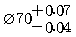
로 표시되어 있을 때 치수 공차는?- +0.07
- -0.04
- 0.03
- 0.11
(정답률: 73%)
60. 원호의 길이를 나타내는 치수선과 치수 보조선의 도시방법으로 올바른 것은?
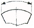
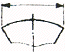
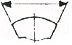
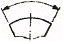
(정답률: 46%)
설명: 냉간가공을 한 황동은 내부 응력이 존재하며, 이 응력이 시간이 지나면서 점차 해소되면서 파이프나 봉재 등에서 균열이 생길 수 있습니다. 이러한 균열은 저장 중에 발생하는 것이 아니라 자연적으로 발생하는 것이므로 자연균열이라고 합니다.